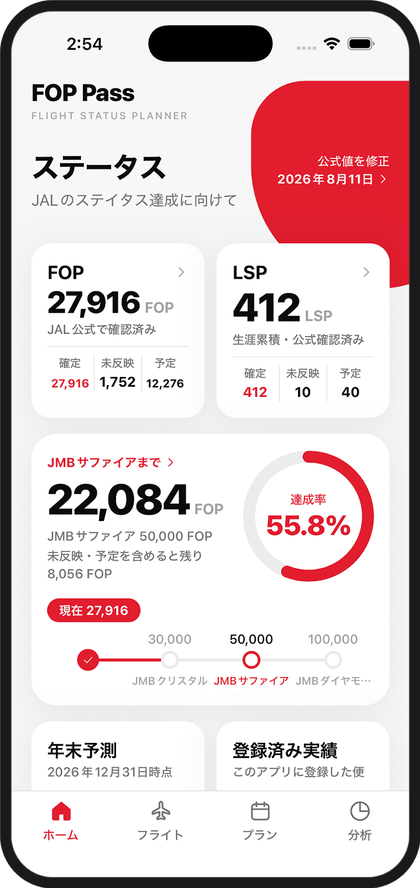
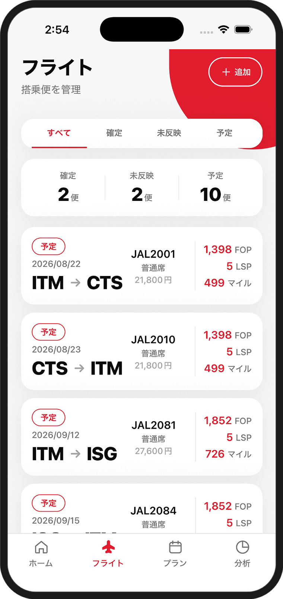
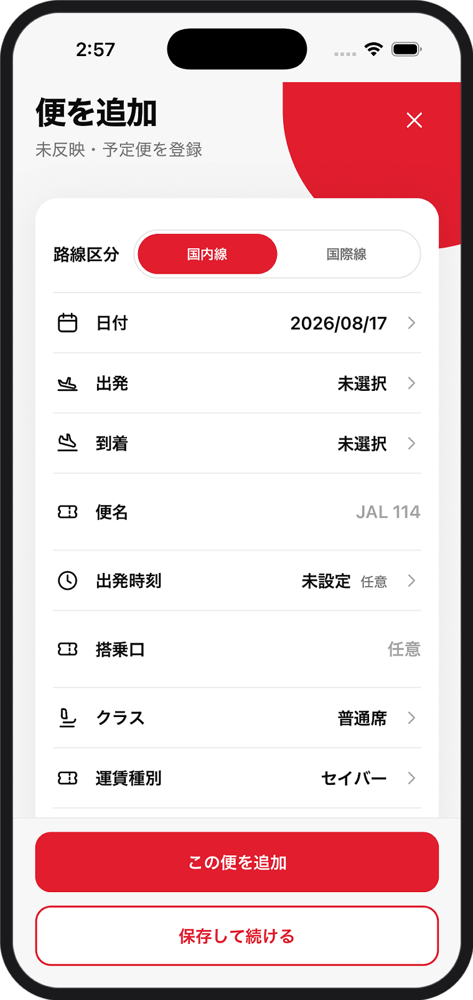
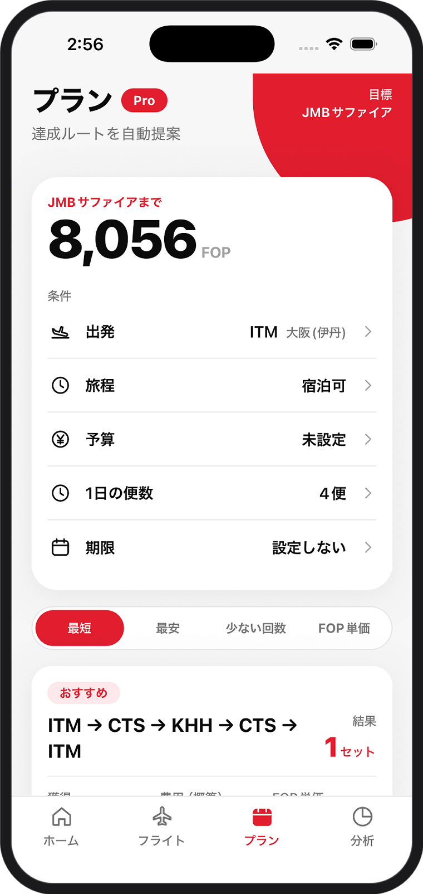
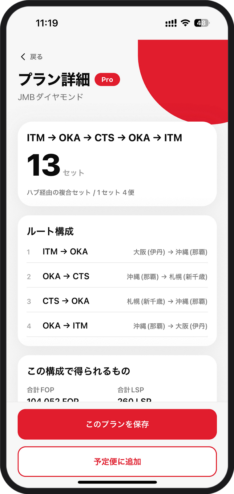
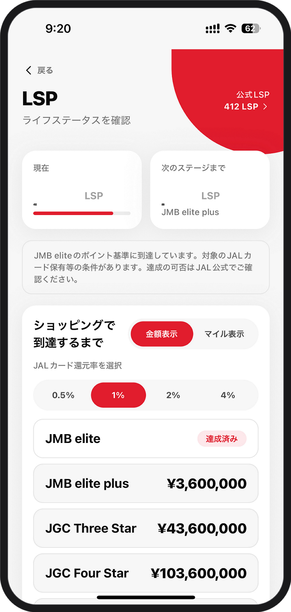
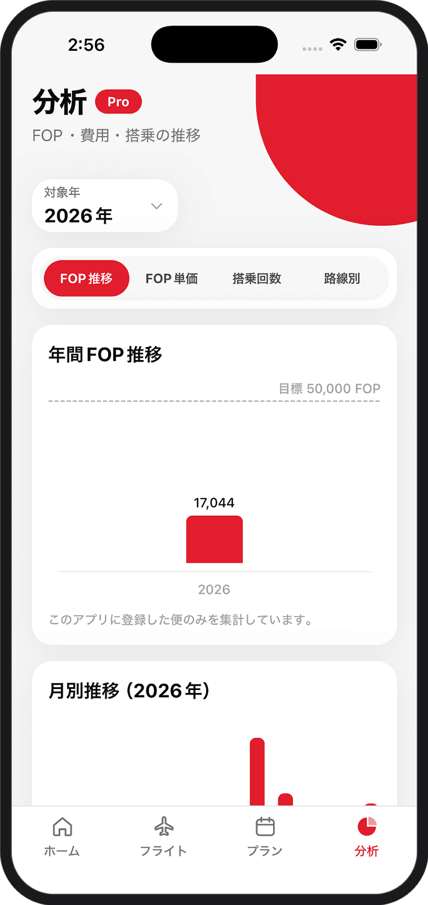

Flight Status Planner
FOPも、LSPも。
次のステータスまで、
ひと目で。
FOP Passは、FOP・Life Statusポイント・搭乗予定・修行プランをまとめて管理し、次のステータスまでの道のりをわかりやすく確認できるiPhoneアプリです。
無料でダウンロード ／ 一部Pro機能あり

FOP / LSP
FOP・LSPを、ひとつに。
いまのFOPとLife Statusポイントを、ひとつの画面に。
JAL公式で確認した「確定」の数字と、まだ反映されていない「未反映」、これから乗る「予定」を分けて持てるので、公式値と予測が混ざりません。
- 確定
- JAL公式で確認済みの数字。
- 未反映
- 搭乗済みだが、まだ公式へ反映されていない便。
- 予定
- これから搭乗する便。着地予測に加算されます。
Status
次のステータスまで、どれくらいか。
達成率と、次のステータスまでの残りFOP。
未反映と予定を含めた場合の着地見込みも、同じ画面で確認できます。
Flights
搭乗便も、予定便も、見やすく管理。
登録した便は搭乗日が近い順に並びます。確定・未反映・予定で絞り込めるので、いま何が反映待ちなのかが分かります。区間マイルと積算率から、FOP・LSP・マイルは自動で試算されます。



PlanPro
目標から、飛び方を考える。
出発地、旅程、予算、1日の便数、期限。条件を決めると、目標に届くルートの候補を並べます。最短・最安・少ない回数・FOP単価の4つの方針で並べ替えて、自分に合う飛び方を選べます。

LSPPro
LSPも、数字で見える。
生涯累積のLife Statusポイントと、次のStarグレードまでの距離。ショッピングで到達する場合に必要な金額とマイル数を、カードの還元率ごとに切り替えて確認できます。
金額表示 ／ マイル表示を切り替えられます。

WidgetPro
アプリを開かなくても、わかる。
FOP、LSP、ステータス進捗、次のフライト。
4種類のウィジェットをホーム画面に置けば、開かずに今の状況が分かります。
-
FOP
今年の積算と内訳
-
LSP
生涯累積と次のグレード
-
進捗
目標までの残りFOP
-
次の便
出発時刻と獲得予定
ウィジェットはPro機能です

AnalyticsPro
積み上げた記録を、
見える形に。
年ごとのFOP推移、FOP単価、搭乗回数、路線別の実績。飛んできた記録をグラフで振り返れば、次の一年の組み立て方が見えてきます。
Pro
もっと便利に。
FOP Pass Pro。
記録と進捗の管理は、無料のままずっと使えます。Proは「どう飛べば届くか」を考えるための機能をまとめて開放します。買い切りなので、月額の更新はありません。
¥680
買い切り ／ 自動更新なし
- 修行プランの自動提案
- LSPシミュレーション
- ホーム画面ウィジェット
- 搭乗履歴の分析
次のフライトから、FOP Passを。
無料でダウンロード ／ 一部Pro機能あり